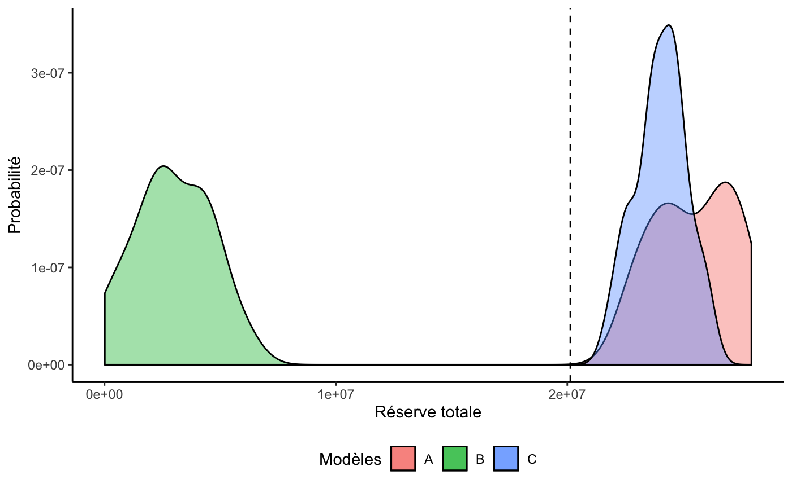
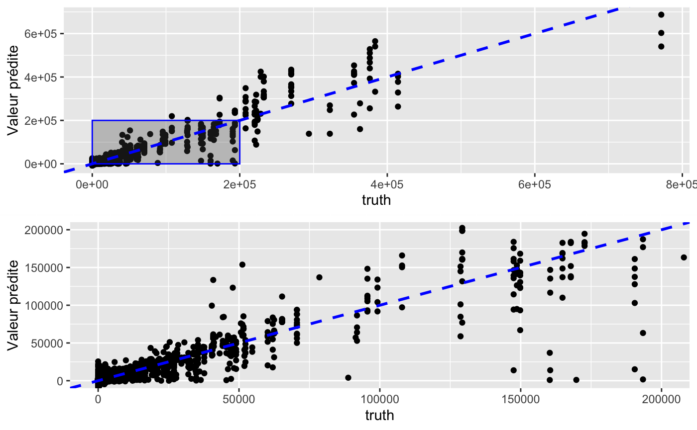
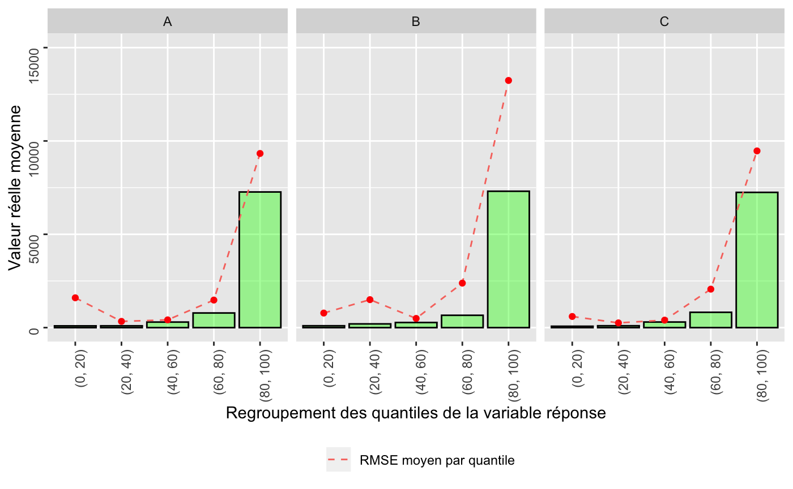
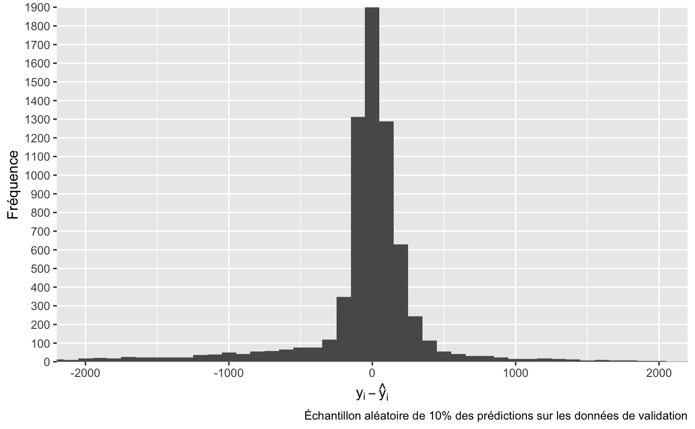
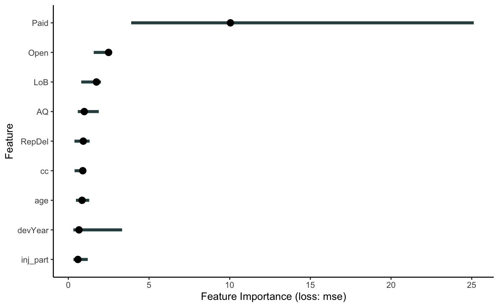
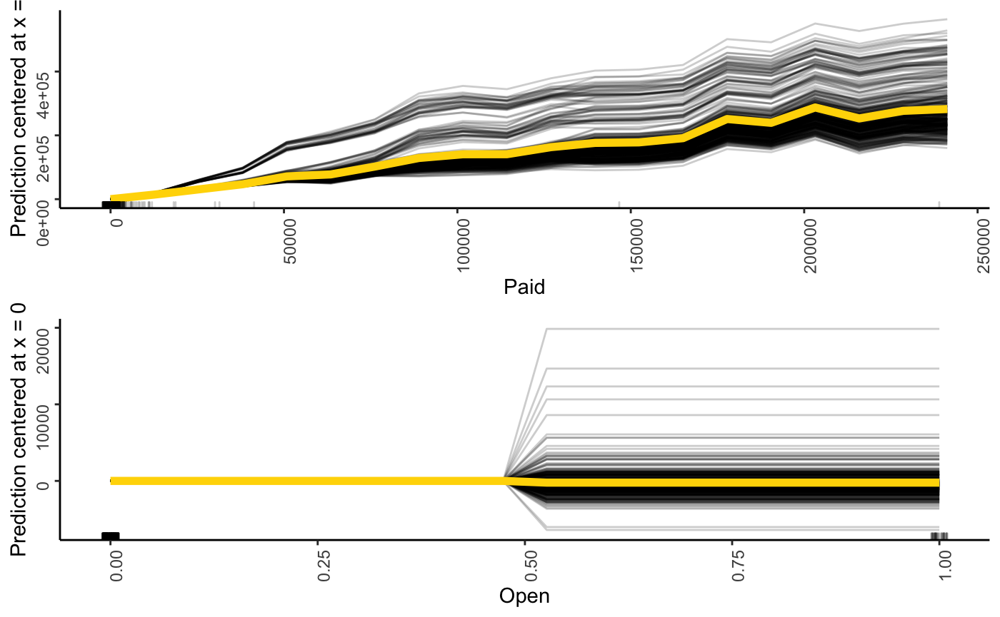

implementation.RmdLes données simulées sont disponibles à même le package. D’autres packages doivent aussi être importés.
library(xgbmr)
library(tidyverse)
#> ── Attaching packages ──────────────────────────────────────────────────────── tidyverse 1.3.0 ──
#> ✔ ggplot2 3.2.1 ✔ purrr 0.3.3
#> ✔ tibble 2.1.3 ✔ dplyr 0.8.3
#> ✔ tidyr 1.0.0 ✔ stringr 1.4.0
#> ✔ readr 1.3.1 ✔ forcats 0.4.0
#> ── Conflicts ─────────────────────────────────────────────────────────── tidyverse_conflicts() ──
#> ✖ dplyr::filter() masks stats::filter()
#> ✖ dplyr::lag() masks stats::lag()
library(xgboost)
#>
#> Attaching package: 'xgboost'
#> The following object is masked from 'package:dplyr':
#>
#> slice
library(mlr)
#> Loading required package: ParamHelpers
library(iml)
library(xtable) # pour des fins de présentation
library(gridExtra)
#>
#> Attaching package: 'gridExtra'
#> The following object is masked from 'package:dplyr':
#>
#> combine
dt <- SimulatedIndClaimsAvant de pouvoir utiliser les données dans l’algorithme XGBoost, on doit d’abord effectuer un certain traitement des données.
Dans la pratique, nous ne connaissons pas encore le vrai montant à l’ultime pour les réclamations qui sont plus récentes. Cet aspect a été tenu en compte, et une fonction du package permet de censurer les réclamations pour lesquelles nous ne sommes pas censé connaître l’information
set.seed(20191024) # Même seed que dans presentation-data.Rnw
dat %>%
select(ClNr, AY, starts_with('Pay'), real_ultimate) %>%
sample_n(5) %>%
knitr::kable()| ClNr | AY | Pay00 | Pay01 | Pay02 | Pay03 | Pay04 | Pay05 | Pay06 | Pay07 | Pay08 | Pay09 | Pay10 | Pay11 | real_ultimate |
|---|---|---|---|---|---|---|---|---|---|---|---|---|---|---|
| 10031 | 1997 | 0 | 345 | 0 | 0 | 0 | 0 | 0 | 0 | 0 | NA | NA | NA | 345 |
| 26457 | 2002 | 1015 | 0 | 0 | 0 | NA | NA | NA | NA | NA | NA | NA | NA | 1015 |
| 36641 | 2005 | 0 | NA | NA | NA | NA | NA | NA | NA | NA | NA | NA | NA | 0 |
| 5903 | 1995 | 542 | 0 | 0 | 0 | 0 | 0 | 0 | 0 | 0 | 0 | 0 | NA | 542 |
| 15129 | 1999 | 200 | 0 | 0 | 0 | 0 | 0 | 0 | NA | NA | NA | NA | NA | 200 |
set.seed(20191023)
index <- makeResampleInstance(
desc = makeResampleDesc('Holdout', stratify.cols = 'AY', split = 0.70),
# il faut absolument donner une tâche et un target bidon
task = makeRegrTask(data = dt, target = 'Pay00')
)
traindt <- dat[index$train.inds[[1]],]
testdt <- dat[index$test.inds[[1]],]mack_bs_tri <- traindt %>%
getAggrTriangle() %>%
ChainLadder::BootChainLadder(R = 1000)
#>
#> Welcome to ChainLadder version 0.2.10
#>
#> Type vignette('ChainLadder', package='ChainLadder') to access
#> the overall package documentation.
#>
#> See demo(package='ChainLadder') for a list of demos.
#>
#> More information is available on the ChainLadder project web-site:
#> https://github.com/mages/ChainLadder
#>
#> To suppress this message use:
#> suppressPackageStartupMessages(library(ChainLadder))
ldf_bs <- mack_bs_tri$simClaims %>%
apply(3, function(triangle){
triangle %>% incr2cum() %>% as.triangle() %>% getLDF()
}) %>% t() %>% apply(2, quantile, probs = 0.8)
data.frame(LDF = ldf_bs) %>% t() %>% knitr::kable()| 1 | 2 | 3 | 4 | 5 | 6 | 7 | 8 | 9 | 10 | 11 | 12 | |
|---|---|---|---|---|---|---|---|---|---|---|---|---|
| LDF | 2.0875 | 1.3137 | 1.1673 | 1.1081 | 1.07792 | 1.0533 | 1.0376 | 1.0252 | 1.0168 | 1.0121 | 1.0066 | 1 |
train_a <- traindt %>%
widetolong() %>%
filter(complete.cases(.)) %>% # garder les années connues
filter(!(Open == 1 & Paid == 0)) %>% # enlever masse à 0
select(-AY, -TotalPaid, -Pay, -still, -max_dev_yr) %>%
rename(Ultimate = real_ultimate) %>%
# Arranger le dataset final pour le modèle A
select(ClNr:RepDel, devYear, Paid, Open, Ultimate) %>%
as_tibble()
train_b <- traindt %>%
widetolong() %>%
filter(complete.cases(.)) %>%
mutate(Ultimate = TotalPaid) %>%
filter(!(Open == 1 & Paid == 0)) %>% # enlever masse à 0
filter(Open == 0) %>%
select(-AY, -TotalPaid, -Pay, -still, -max_dev_yr, -real_ultimate) %>%
as_tibble()
train_c <- traindt %>%
widetolong() %>%
filter(complete.cases(.)) %>% # garder les années connues
mutate(Ultimate = case_when(
still == 1 ~ TotalPaid * ldf_bs[max_dev_yr + 1],
TRUE ~ TotalPaid)) %>%
filter(!(Open == 1 & Paid == 0)) %>% # enlever masse à 0
select(-AY, -TotalPaid, -Pay, -still, -max_dev_yr, -real_ultimate) %>%
as_tibble() # pour enlever le tag grouped dfIdem pour le test set :
Étant donné que les modèles xgboost peuvent être long à rouler, des modèles déjà entrainés sur les données d’exemple sont inclus avec le package. Les hyperparamètres des modèles sont disponibles dans la table suivante :
fit_a$learner$par.vals %>% data.frame(Modèle = 'A', .) %>%
bind_rows(fit_b$learner$par.vals %>% data.frame(Modèle = 'B', .),
fit_c$learner$par.vals %>% data.frame(Modèle = 'C', .)) %>%
knitr::kable()
#> Warning in bind_rows_(x, .id): Unequal factor levels: coercing to character
#> Warning in bind_rows_(x, .id): binding character and factor vector, coercing
#> into character vector
#> Warning in bind_rows_(x, .id): binding character and factor vector, coercing
#> into character vector
#> Warning in bind_rows_(x, .id): binding character and factor vector, coercing
#> into character vector| Modèle | nrounds | verbose | objective | eval_metric | eta | max_depth | min_child_weight | subsample | colsample_bytree |
|---|---|---|---|---|---|---|---|---|---|
| A | 1184 | 0 | reg:squarederror | rmse | 0.1 | 3 | 20 | 0.5 | 0.5 |
| B | 66 | 0 | reg:squarederror | rmse | 0.1 | 3 | 20 | 0.5 | 0.5 |
| C | 740 | 0 | reg:squarederror | rmse | 0.1 | 3 | 20 | 0.5 | 0.5 |
test_dt <- test %>% select(-ClNr)
test_tsk <- makeRegrTask(data = test_dt, target = 'Ultimate')
#> Warning in makeTask(type = type, data = data, weights = weights, blocking =
#> blocking, : Provided data is not a pure data.frame but from class tbl_df, hence
#> it will be converted.Les modèles sont déjà inclus dans le package pour l’exemple
pred_a <- predict(fit_a, test_tsk)
pred_b <- predict(fit_b, test_tsk)
pred_c <- predict(fit_c, test_tsk)Mettre ensemble les variables explicatives et les prédictions
test_pred_a <- test_dt %>%
rownames_to_column('id') %>%
mutate_at(vars(id), as.integer) %>%
left_join(pred_a$data, by = "id")
test_pred_b <- test_dt %>%
rownames_to_column('id') %>%
mutate_at(vars(id), as.integer) %>%
left_join(pred_b$data, by = "id")
test_pred_c <- test_dt %>%
rownames_to_column('id') %>%
mutate_at(vars(id), as.integer) %>%
left_join(pred_c$data, by = "id")## Vraie réserve (selon données simulées du test set)
vraie_reserve <- test_dt %>% summarise(paye = sum(Paid), total = sum(Ultimate), R = total - paye)
## Calcul des réserves totales selon chaque modèle
aa <- apply(bs_pred_a, 2, sum)
bs_res_a <- (aa - sum(test_dt$Paid)) %>% data.frame(A = .)
bb <- apply(bs_pred_b, 2, sum)
bs_res_b <- (bb - sum(test_dt$Paid)) %>% data.frame(B = .)
cc <- apply(bs_pred_c, 2, sum)
bs_res_c <- (cc - sum(test_dt$Paid)) %>% data.frame(C = .)Et on obtient le tableau suivant :
bind_cols(bs_res_a, bs_res_b, bs_res_c) %>%
gather('Modèle', 'Réserve') %>%
group_by(Modèle) %>%
nest() %>%
mutate(
moyenne = map_dbl(data,function(x) unlist(x) %>% mean),
sd = map_dbl(data,function(x) unlist(x) %>% sd),
VaR95 = map_dbl(data,function(x) unlist(x) %>% quantile(., probs = .95)),
VaR99 = map_dbl(data,function(x) unlist(x) %>% quantile(., probs = .99))
) %>%
select(-data) %>%
data.frame() %>%
format(big.mark = ' ', justify = 'centre') %>%
knitr::kable()| Modèle | moyenne | sd | VaR95 | VaR99 |
|---|---|---|---|---|
| A | 25 482 234 | 1 720 920 | 27 927 106 | 27 951 939 |
| B | 2 937 217 | 1 653 261 | 5 326 843 | 5 885 246 |
| C | 24 057 011 | 1 098 914 | 25 779 615 | 26 007 870 |
Et le graphique suivant :
bind_cols(bs_res_a, bs_res_b, bs_res_c) %>%
ggplot() +
geom_density(aes(x = A, y = ..density.., fill = 'A'), n = 2^12, alpha = 0.4) +
geom_density(aes(x = B, y = ..density.., fill = 'B'), n = 2^12, alpha = 0.4) +
geom_density(aes(x = C, y = ..density.., fill = 'C'), n = 2^12, alpha = 0.4) +
theme_classic() +
theme(legend.position = 'bottom') +
labs(fill = 'Modèles', x = 'Réserve totale', y = 'Probabilité') +
geom_vline(xintercept = vraie_reserve$R, linetype = 'dashed')
zoom_out_pred <- pred_c$data %>%
# filter(response > 0) %>%
ggplot(aes(x = truth, y = response)) +
geom_point() +
annotate('rect',
xmin = 0, xmax = 200000,
ymin = 0, ymax = 200000,
alpha = 0.3, col = 'blue') +
# geom_vline(xintercept = qq, col = 'red', linetype = 'dashed') +
geom_abline(intercept = 0, slope = 1,
col = 'blue', size = 1, linetype = 'dashed') +
# coord_cartesian(xlim = c(0, 25000), ylim = c(0,25000)) +
labs(y = 'Valeur prédite')
zoom_in_pred <- pred_c$data %>%
# filter(response > 0) %>%
ggplot(aes(x = truth, y = response)) +
geom_point() +
# geom_vline(xintercept = qq, col = 'red', linetype = 'dashed') +
geom_abline(intercept = 0, slope = 1,
col = 'blue', size = 1, linetype = 'dashed') +
coord_cartesian(xlim = c(0, 200000), ylim = c(0,200000)) +
labs(y = 'Valeur prédite')
zoom <- arrangeGrob(zoom_out_pred, zoom_in_pred)
plot(zoom)
pred_a$data %>%
rename(A = response) %>%
mutate(
B = pred_b$data$response,
C = pred_c$data$response
) %>%
gather('Modèle', 'response', A,B,C) %>%
group_by(Modèle) %>% nest() %>%
mutate(quantile = map(data, function(dt){
dt %>%
transmute(quantile = ntile(response, n = 5))
})) %>%
unnest(cols = c(data, quantile)) %>% select(-id) %>%
group_by(Modèle, quantile) %>%
summarise(
reel_moyen = mean(truth),
rmse_moyen = sqrt(mean((truth - response)^2))
) %>%
mutate(quantile = case_when(
quantile == 1 ~ "(0, 20)",
quantile == 2 ~ "(20, 40)",
quantile == 3 ~ "(40, 60)",
quantile == 4 ~ "(60, 80)",
quantile == 5 ~ "(80, 100)"
)) %>%
ggplot(aes(x = quantile)) +
geom_bar(aes(y = reel_moyen),stat = 'identity', fill = 'green',
alpha = 0.4, col = 'black') +
geom_line(aes(y = rmse_moyen, col = 'RMSE moyen par quantile'),
linetype = 'dashed', group =1) +
geom_point(aes(y = rmse_moyen), col = 'red') +
theme(legend.position = 'bottom',
axis.text = element_text(angle = 90, hjust = 1, vjust = 0.5)) +
coord_cartesian(ylim = c(0, 15000)) +
labs(
y = "Valeur réelle moyenne",
x = "Regroupement des quantiles de la variable réponse", col = NULL) +
facet_grid(. ~ Modèle)
set.seed(2019)
pred_a$data %>%
sample_frac(.1) %>%
mutate(erreur = truth - response) %>%
ggplot() +
geom_histogram(aes(x = erreur), binwidth = 100) +
coord_cartesian(xlim = c(-2000, 2000)) +
labs(x = expression(epsilon = y[i] - hat(y)[i]),
y = 'Fréquence',
caption = 'Échantillon aléatoire de 10% des prédictions sur les données de validation') +
scale_y_discrete(limits = seq(0, 2000, 100)) 
set.seed(2019)
predictor_a <- test_dt %>%
# On sélectionne 30 observations par année de développement
group_by(devYear) %>% sample_n(30) %>%
# on rammène en tibble car iml n'accepte pas un 'grouped_df' de dplyr
as_tibble() %>%
Predictor$new(model = fit_a, data = select(., -Ultimate), y= select(., Ultimate))
predictor_b <- test_dt %>%
# On sélectionne 30 observations par année de développement
group_by(devYear) %>% sample_n(30) %>%
# on rammène en tibble car iml n'accepte pas un 'grouped_df' de dplyr
as_tibble() %>%
Predictor$new(model = fit_b, data = select(., -Ultimate), y= select(., Ultimate))
predictor_c <- test_dt %>%
# On sélectionne 30 observations par année de développement
group_by(devYear) %>% sample_n(30) %>%
# on rammène en tibble car iml n'accepte pas un 'grouped_df' de dplyr
as_tibble() %>%
Predictor$new(model = fit_a, data = select(., -Ultimate), y= select(., Ultimate))varimp_a <- FeatureImp$new(predictor_a, loss = "mse") %>% plot() + theme_classic()
varimp_b <- FeatureImp$new(predictor_b, loss = "mse") %>% plot() + theme_classic()
varimp_c <- FeatureImp$new(predictor_c, loss = "mse") %>% plot() + theme_classic()
# grid.arrange(varimp_a, varimp_b, varimp_c, nrow = 3)
varimp_c
var2check <- c('Paid', 'Open')
pdp_ice <- lapply(var2check,
function(var){
FeatureEffect$new(predictor_a,
feature = var,
method = 'pdp+ice',
center.at = 0) %>%
plot() + theme_classic() +
theme(axis.text = element_text(angle = 90, hjust = 1, vjust = 0.5))
})
# Produire les 4 graphiques dans une seule figure.
do.call('grid.arrange', pdp_ice)